TEYES Sibir × GTA 6: три карусели – тексты и ТЗ
Вывод: тексты трёх каруселей готовы, ТЗ на 18 картинок написаны, нарисовано 18 из 18. Рисуем бесплатно через Codex после сброса лимита в 05:06 НСК. Пост 1 с 3 000 ₽ – только для ВКонтакте: в Инстаграме акции и цены под запретом.
Почему так: правила площадок
- Инстаграм: реклама на площадке запрещена с 01.09.2025 (ч. 10.7 ст. 5 ФЗ «О рекламе»): без цен, акций, «3 000 ₽», «запишись». Поэтому пост 1 – ВКонтакте и Telegram; в посте 2 последняя карточка для Инстаграма – «напиши в комментариях», без стоимости.
- GTA: слово «GTA 6» в тексте – как упоминание события, без логотипа, шрифта и героев игры. Для платного продвижения поста с акцией – сначала юрист: «GTA» – чужой товарный знак.
- Картинки: надписи не рисуем – ставим потом ровным шрифтом; номера пустые; машины чистые 2015–2022; лица только реальные с фото.
Пост 1. Дарим 3 000 ₽ тем, кто играет в GTA 6 (9 карточек)
1. Дарим 3 000 ₽ тем, кто играет в GTA 6
На любые наши услуги. Перешли другу с машиной – пусть заберёт свои.
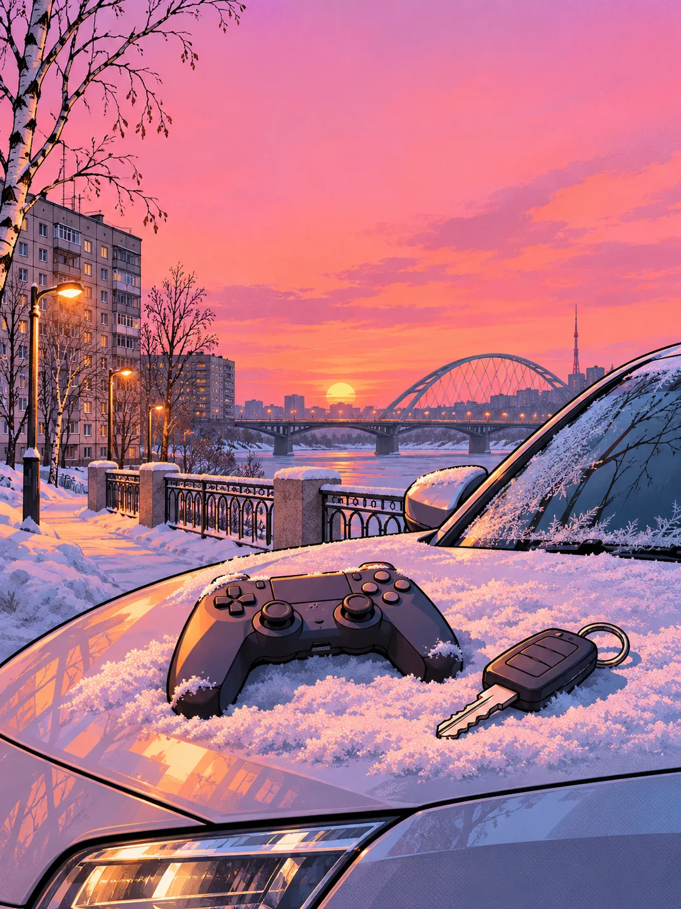
ТЗ для генератора
Vertical 3:4 illustration in the style of 2000s-2020s open-world video game loading-screen key art: thick black ink outlines, cel-shaded flat color blocks, hard-edged shadows, subtle halftone grit, semi-realistic painted forms, glossy poster finish. A game controller and a car key lying together on fresh snow on the hood of a clean modern sedan, gift-like glowing light, top band of empty sky for a headline. Novosibirsk, Siberia, November early winter: fresh snow, frost on glass, low pink-orange sunset with cold blue shadows, sodium-orange streetlights, Soviet-era apartment blocks, birch trees, no palm trees. Cars are clean, well-kept common mass-market models from 2015-2022 in good condition unless the scene says otherwise. No extra people beyond those described in the scene. No text, no letters, no numbers, no logos, no game titles, no brand badges on cars, no watermark, blank license plates, no weapons, no police, no characters from any existing game, no celebrities, no visible faces: people only from behind, in silhouette or as hands.
2. Как забрать
Напиши нам в сообщения группы два слова: «Играю в GTA 6». Всё.
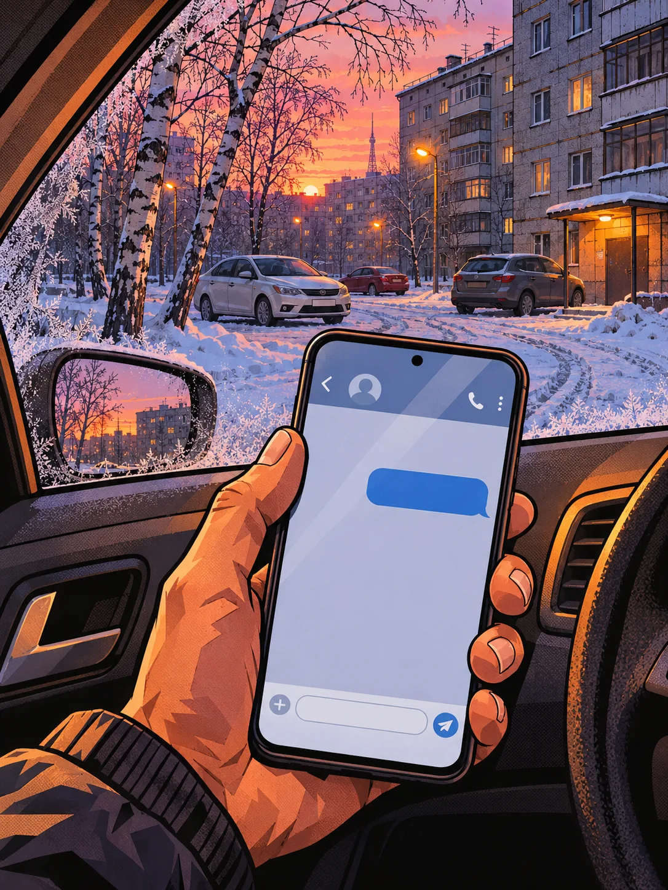
ТЗ для генератора
Vertical 3:4 illustration in the style of 2000s-2020s open-world video game loading-screen key art: thick black ink outlines, cel-shaded flat color blocks, hard-edged shadows, subtle halftone grit, semi-realistic painted forms, glossy poster finish. Close-up of a hand holding a smartphone with a generic messenger chat screen showing one sent message bubble with no readable text, warm cabin light, snowy courtyard through the car window. Novosibirsk, Siberia, November early winter: fresh snow, frost on glass, low pink-orange sunset with cold blue shadows, sodium-orange streetlights, Soviet-era apartment blocks, birch trees, no palm trees. Cars are clean, well-kept common mass-market models from 2015-2022 in good condition unless the scene says otherwise. No extra people beyond those described in the scene. No text, no letters, no numbers, no logos, no game titles, no brand badges on cars, no watermark, blank license plates, no weapons, no police, no characters from any existing game, no celebrities, no visible faces: people only from behind, in silhouette or as hands.
3. На что потратить
На то, чтобы машина жила как в игре, а не как в Сибири: сигнализация, русификация, мультимедиа, отопитель, звук.
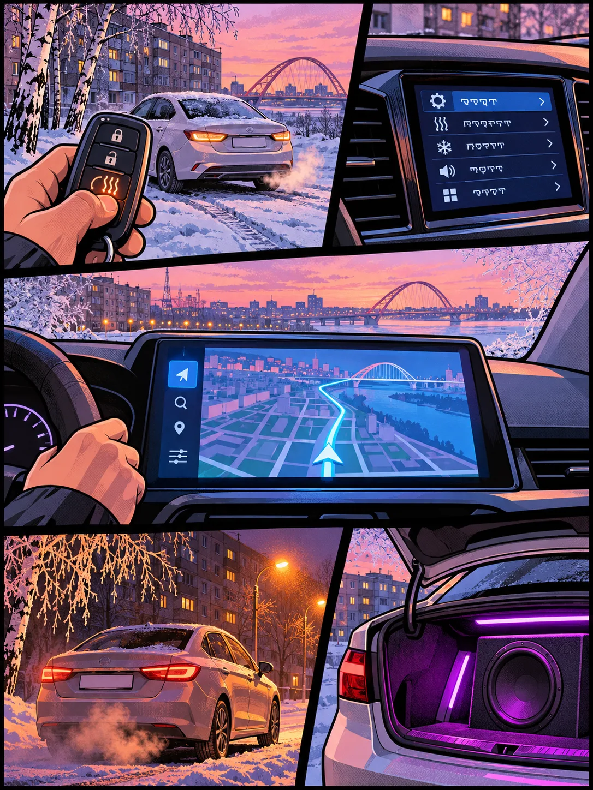
ТЗ для генератора
Vertical 3:4 illustration in the style of 2000s-2020s open-world video game loading-screen key art: thick black ink outlines, cel-shaded flat color blocks, hard-edged shadows, subtle halftone grit, semi-realistic painted forms, glossy poster finish. Box-art collage grid of 5 illustrated panels with thick black dividers: a key fob with a car warming up in snow; a dashboard screen with an unreadable foreign-script menu; a large glowing navigation screen; warm air and steam around a car at night; a trunk with a subwoofer in neon glow. Novosibirsk, Siberia, November early winter: fresh snow, frost on glass, low pink-orange sunset with cold blue shadows, sodium-orange streetlights, Soviet-era apartment blocks, birch trees, no palm trees. Cars are clean, well-kept common mass-market models from 2015-2022 in good condition unless the scene says otherwise. No extra people beyond those described in the scene. No text, no letters, no numbers, no logos, no game titles, no brand badges on cars, no watermark, blank license plates, no weapons, no police, no characters from any existing game, no celebrities, no visible faces: people only from behind, in silhouette or as hands.
4. Сигнализация с автозапуском
Машина заводится с первого раза. Как в игре. Только в −30.
Картинка: готовая картинка 02 или 13 из галереи.
5. Русификация
Меню на русском. Китайский и японский учить не надо.
Картинка: готовая картинка 18.
6. Мультимедиа Teyes
Карта на большом экране, а не на телефоне, который падает с присоски на каждой кочке.
Картинка: готовая картинка 17.
7. Автономный отопитель
В салоне тепло, как в Вайс-Сити, ещё до того, как ты вышел из подъезда.
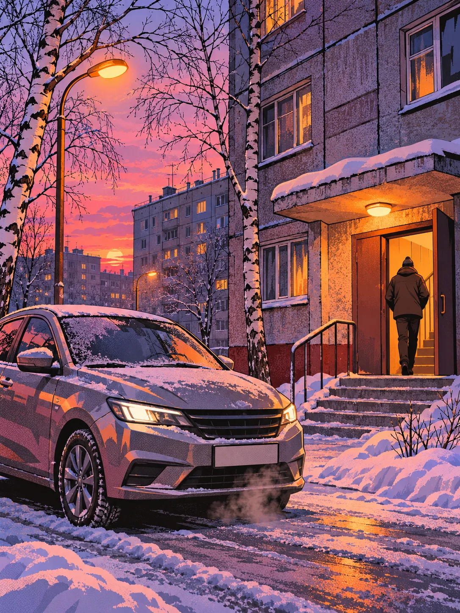
ТЗ для генератора
Vertical 3:4 illustration in the style of 2000s-2020s open-world video game loading-screen key art: thick black ink outlines, cel-shaded flat color blocks, hard-edged shadows, subtle halftone grit, semi-realistic painted forms, glossy poster finish. Night, a clean modern crossover in deep frost with warm orange light glowing from the cabin and a little steam from under the car, a person seen from behind in the apartment entrance doorway. Novosibirsk, Siberia, November early winter: fresh snow, frost on glass, low pink-orange sunset with cold blue shadows, sodium-orange streetlights, Soviet-era apartment blocks, birch trees, no palm trees. Cars are clean, well-kept common mass-market models from 2015-2022 in good condition unless the scene says otherwise. No extra people beyond those described in the scene. No text, no letters, no numbers, no logos, no game titles, no brand badges on cars, no watermark, blank license plates, no weapons, no police, no characters from any existing game, no celebrities, no visible faces: people only from behind, in silhouette or as hands.
8. Автозвук
Пробка на мосту звучит как концерт, а не как пищалки из 2008-го.
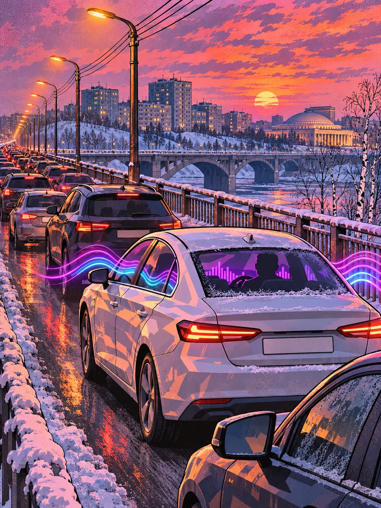
ТЗ для генератора
Vertical 3:4 illustration in the style of 2000s-2020s open-world video game loading-screen key art: thick black ink outlines, cel-shaded flat color blocks, hard-edged shadows, subtle halftone grit, semi-realistic painted forms, glossy poster finish. Evening traffic jam on a long city bridge in winter, one clean modern car emitting stylized glowing neon sound waves from its windows, other cars dark. Novosibirsk, Siberia, November early winter: fresh snow, frost on glass, low pink-orange sunset with cold blue shadows, sodium-orange streetlights, Soviet-era apartment blocks, birch trees, no palm trees. Cars are clean, well-kept common mass-market models from 2015-2022 in good condition unless the scene says otherwise. No extra people beyond those described in the scene. No text, no letters, no numbers, no logos, no game titles, no brand badges on cars, no watermark, blank license plates, no weapons, no police, no characters from any existing game, no celebrities, no visible faces: people only from behind, in silhouette or as hands.
9. Сколько действует
Напиши в течение недели – до 26 ноября. Приезжай в течение месяца – до 19 декабря.
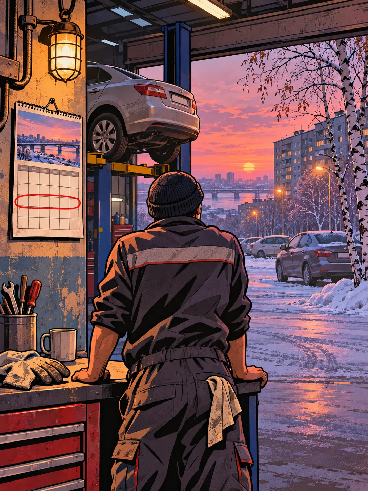
ТЗ для генератора
Vertical 3:4 illustration in the style of 2000s-2020s open-world video game loading-screen key art: thick black ink outlines, cel-shaded flat color blocks, hard-edged shadows, subtle halftone grit, semi-realistic painted forms, glossy poster finish. A wall calendar in a car service bay with one week circled in red marker and no readable text, a car on a lift behind, warm work light. Novosibirsk, Siberia, November early winter: fresh snow, frost on glass, low pink-orange sunset with cold blue shadows, sodium-orange streetlights, Soviet-era apartment blocks, birch trees, no palm trees. Cars are clean, well-kept common mass-market models from 2015-2022 in good condition unless the scene says otherwise. No extra people beyond those described in the scene. No text, no letters, no numbers, no logos, no game titles, no brand badges on cars, no watermark, blank license plates, no weapons, no police, no characters from any existing game, no celebrities, no visible faces: people only from behind, in silhouette or as hands.
Пост 2. За 13 лет поменялась не только GTA (6 карточек)
1. За 13 лет поменялась не только GTA
Мультимедиа тоже. Toyota Land Cruiser Prado 150: штатная 2013 года и Teyes CC4 PRO.
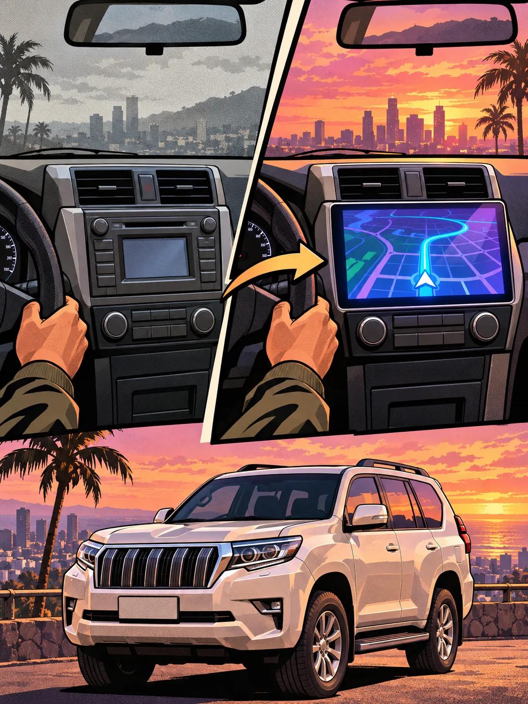
ТЗ для генератора
Vertical 3:4 illustration in the style of 2000s-2020s open-world video game loading-screen key art: thick black ink outlines, cel-shaded flat color blocks, hard-edged shadows, subtle halftone grit, semi-realistic painted forms, glossy poster finish. Split image of the same Toyota Land Cruiser Prado 150 dashboard: left an old 2013 factory head unit with small dim screen and many buttons in dull grey light; right a large modern glowing 10-inch Android head unit screen with a generic navigation map in neon light. Generic interface, no readable text, no app icons. Cars are clean, well-kept common mass-market models from 2015-2022 in good condition unless the scene says otherwise. No extra people beyond those described in the scene. No text, no letters, no numbers, no logos, no game titles, no brand badges on cars, no watermark, blank license plates, no weapons, no police, no characters from any existing game, no celebrities, no visible faces: people only from behind, in silhouette or as hands.
2. Land Cruiser 200
Было в 2013-м – и как может быть сейчас.
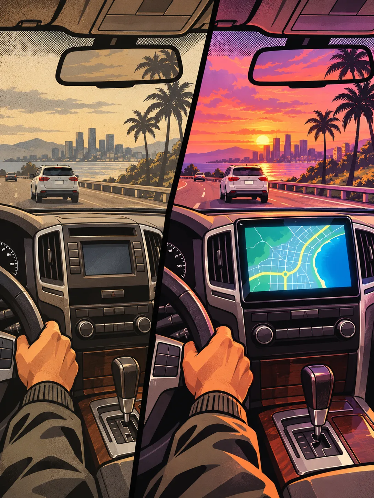
ТЗ для генератора
Vertical 3:4 illustration in the style of 2000s-2020s open-world video game loading-screen key art: thick black ink outlines, cel-shaded flat color blocks, hard-edged shadows, subtle halftone grit, semi-realistic painted forms, glossy poster finish. Split image of the same Toyota Land Cruiser 200 dashboard: left the old 2013 factory screen in dull light; right a large modern glowing Android head unit screen with a generic map in neon light. No readable text, no app icons. Cars are clean, well-kept common mass-market models from 2015-2022 in good condition unless the scene says otherwise. No extra people beyond those described in the scene. No text, no letters, no numbers, no logos, no game titles, no brand badges on cars, no watermark, blank license plates, no weapons, no police, no characters from any existing game, no celebrities, no visible faces: people only from behind, in silhouette or as hands.
3. Honda Vezel
Правый руль, японское меню – и как может быть.
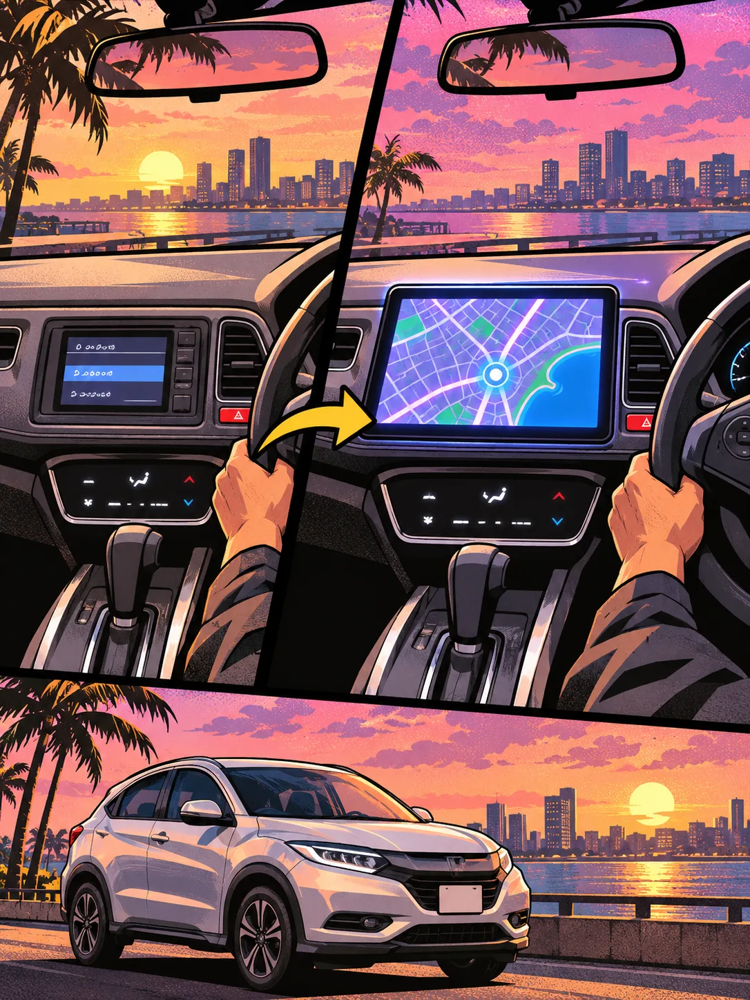
ТЗ для генератора
Vertical 3:4 illustration in the style of 2000s-2020s open-world video game loading-screen key art: thick black ink outlines, cel-shaded flat color blocks, hard-edged shadows, subtle halftone grit, semi-realistic painted forms, glossy poster finish. Split image of the same right-hand-drive Honda Vezel dashboard: left a small old factory screen with an unreadable foreign-script menu; right a large modern glowing Android head unit screen with a generic map in neon light. No readable text, no app icons. Cars are clean, well-kept common mass-market models from 2015-2022 in good condition unless the scene says otherwise. No extra people beyond those described in the scene. No text, no letters, no numbers, no logos, no game titles, no brand badges on cars, no watermark, blank license plates, no weapons, no police, no characters from any existing game, no celebrities, no visible faces: people only from behind, in silhouette or as hands.
4. Toyota Camry
Самый частый седан во дворах – и как может быть.
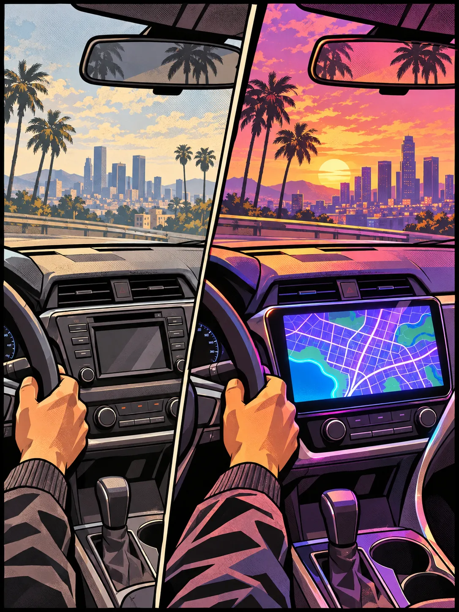
ТЗ для генератора
Vertical 3:4 illustration in the style of 2000s-2020s open-world video game loading-screen key art: thick black ink outlines, cel-shaded flat color blocks, hard-edged shadows, subtle halftone grit, semi-realistic painted forms, glossy poster finish. Split image of the same Toyota Camry sedan dashboard: left the old factory screen in dull light; right a large modern glowing Android head unit screen with a generic map in neon light. No readable text, no app icons. Cars are clean, well-kept common mass-market models from 2015-2022 in good condition unless the scene says otherwise. No extra people beyond those described in the scene. No text, no letters, no numbers, no logos, no game titles, no brand badges on cars, no watermark, blank license plates, no weapons, no police, no characters from any existing game, no celebrities, no visible faces: people only from behind, in silhouette or as hands.
5. Может, пора обновить мультимедиа и в своей машине?
Кирилл уже всё поставил. Теперь отдыхает.
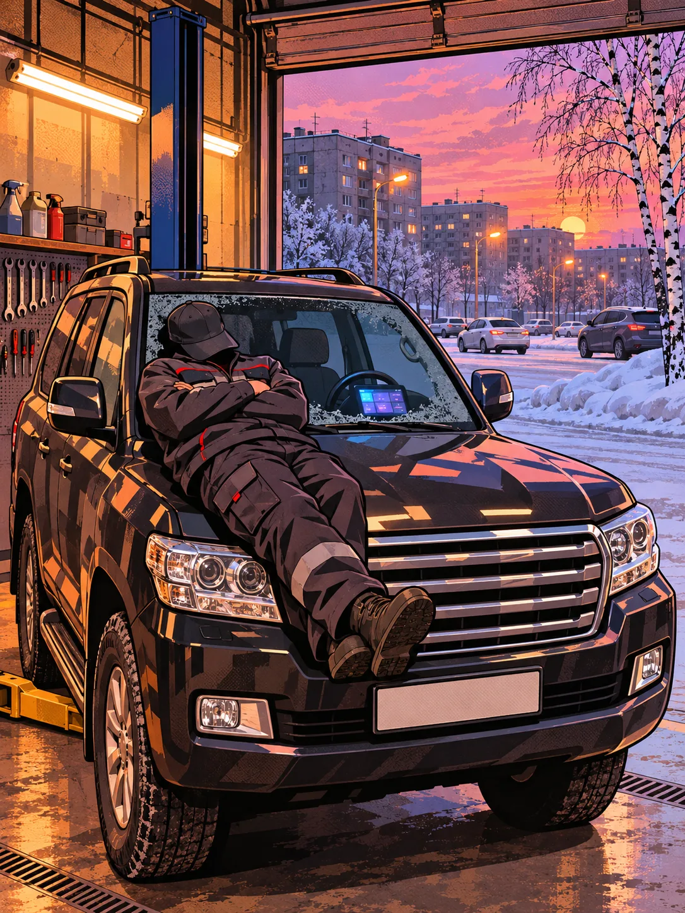
ТЗ для генератора
Vertical 3:4 illustration in the style of 2000s-2020s open-world video game loading-screen key art: thick black ink outlines, cel-shaded flat color blocks, hard-edged shadows, subtle halftone grit, semi-realistic painted forms, glossy poster finish. A car technician in dark work clothes asleep on the hood of a clean Toyota Land Cruiser 200 in a warm service bay, a cap pulled over his face so the face is not visible, arms crossed, a new glowing screen visible inside the car, snow outside the open gate. Novosibirsk, Siberia, November early winter: fresh snow, frost on glass, low pink-orange sunset with cold blue shadows, sodium-orange streetlights, Soviet-era apartment blocks, birch trees, no palm trees. Cars are clean, well-kept common mass-market models from 2015-2022 in good condition unless the scene says otherwise. No extra people beyond those described in the scene. No text, no letters, no numbers, no logos, no game titles, no brand badges on cars, no watermark, blank license plates, no weapons, no police, no characters from any existing game, no celebrities, no visible faces: people only from behind, in silhouette or as hands.
6. Напиши марку, модель и год
Скажем, какая мультимедиа встанет на твою машину и сколько это будет стоить. В Инстаграме: «Напиши в комментариях – подскажем, какая встанет».
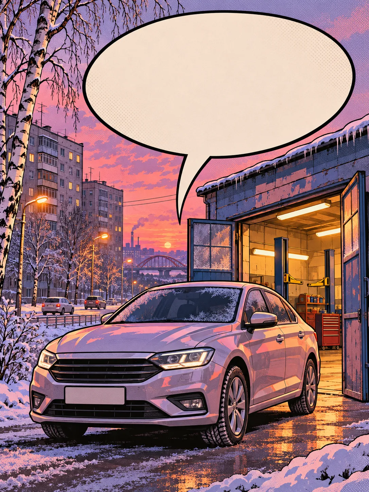
ТЗ для генератора
Vertical 3:4 illustration in the style of 2000s-2020s open-world video game loading-screen key art: thick black ink outlines, cel-shaded flat color blocks, hard-edged shadows, subtle halftone grit, semi-realistic painted forms, glossy poster finish. A clean modern sedan in front of an open service bay gate at dusk, warm light from inside, a big empty speech-bubble shape floating above the car with no text inside. Novosibirsk, Siberia, November early winter: fresh snow, frost on glass, low pink-orange sunset with cold blue shadows, sodium-orange streetlights, Soviet-era apartment blocks, birch trees, no palm trees. Cars are clean, well-kept common mass-market models from 2015-2022 in good condition unless the scene says otherwise. No extra people beyond those described in the scene. No text, no letters, no numbers, no logos, no game titles, no brand badges on cars, no watermark, blank license plates, no weapons, no police, no characters from any existing game, no celebrities, no visible faces: people only from behind, in silhouette or as hands.
Пост 3. Команда TEYES Sibir (8 карточек)
1. Команда TEYES Sibir
Знакомься: люди, которые прокачивают машины в Новосибирске.
Картинка: реальное фото бокса с машиной.
2. Кирилл – маэстро Teyes
Знает, какая рамка встанет на твою машину, раньше, чем ты договоришь марку.
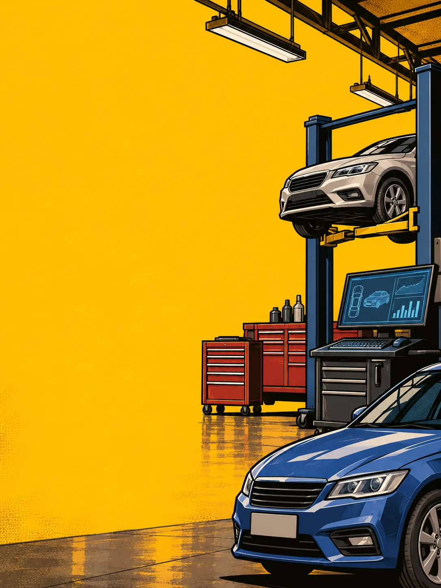
ТЗ для генератора
Vertical 3:4 illustration in the style of 2000s-2020s open-world video game loading-screen key art: thick black ink outlines, cel-shaded flat color blocks, hard-edged shadows, subtle halftone grit, semi-realistic painted forms, glossy poster finish. Background plate only, no people: a solid saturated mustard yellow background with dark flat silhouettes of a car lift, a dashboard with a large screen, tool chests, leaving the center-left two thirds empty for a cut-out photo of a person to be added later. Cars are clean, well-kept common mass-market models from 2015-2022 in good condition unless the scene says otherwise. No extra people beyond those described in the scene. No text, no letters, no numbers, no logos, no game titles, no brand badges on cars, no watermark, blank license plates, no weapons, no police, no characters from any existing game, no celebrities, no visible faces: people only from behind, in silhouette or as hands.
3. Артём – маэстро китайских авто
Переведёт меню с китайского так, что машина будто родилась в Новосибирске.
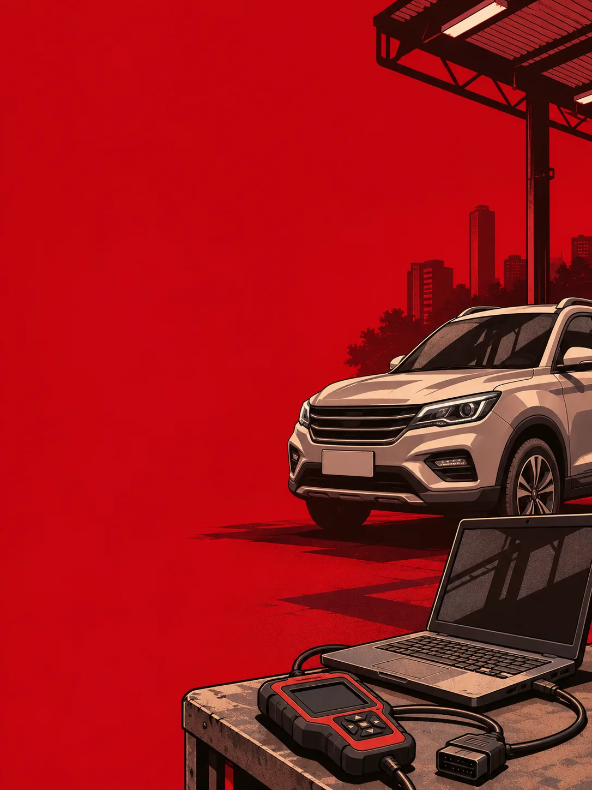
ТЗ для генератора
Vertical 3:4 illustration in the style of 2000s-2020s open-world video game loading-screen key art: thick black ink outlines, cel-shaded flat color blocks, hard-edged shadows, subtle halftone grit, semi-realistic painted forms, glossy poster finish. Background plate only, no people: a solid saturated crimson red background with dark flat silhouettes of a modern Chinese crossover, a laptop with cables, a diagnostic scanner, leaving the center-left two thirds empty for a cut-out photo of a person to be added later. Cars are clean, well-kept common mass-market models from 2015-2022 in good condition unless the scene says otherwise. No extra people beyond those described in the scene. No text, no letters, no numbers, no logos, no game titles, no brand badges on cars, no watermark, blank license plates, no weapons, no police, no characters from any existing game, no celebrities, no visible faces: people only from behind, in silhouette or as hands.
4. Алексей – знает, как сделать твою машину лучше
Подберёт под бюджет и назовёт цену до начала работ. Без сюрпризов на выдаче.
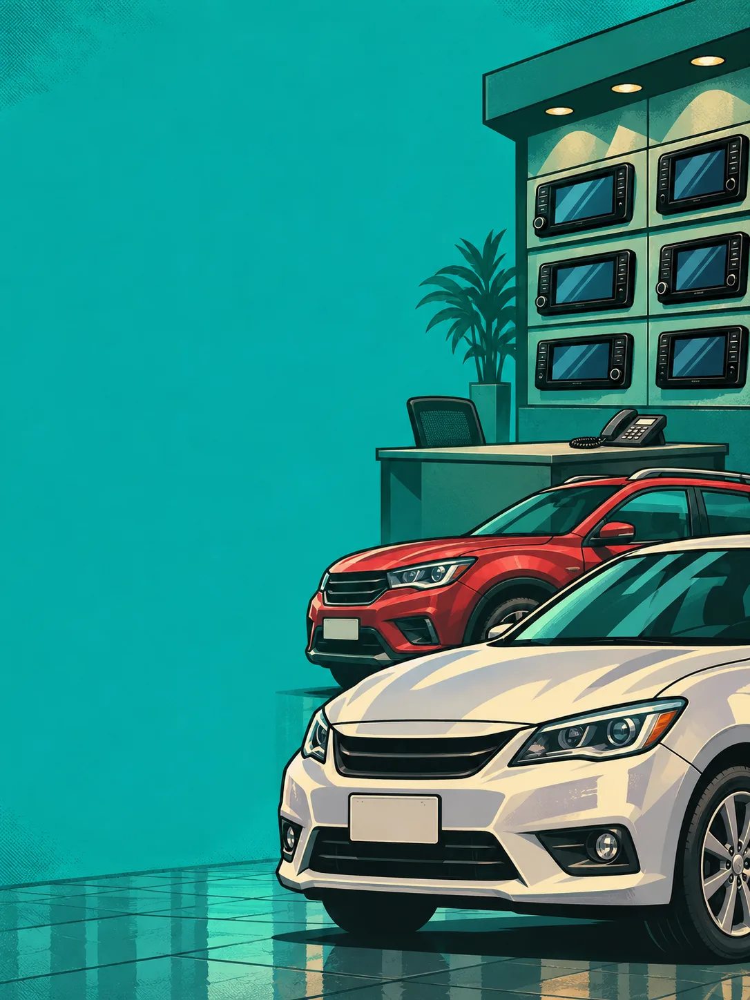
ТЗ для генератора
Vertical 3:4 illustration in the style of 2000s-2020s open-world video game loading-screen key art: thick black ink outlines, cel-shaded flat color blocks, hard-edged shadows, subtle halftone grit, semi-realistic painted forms, glossy poster finish. Background plate only, no people: a solid saturated teal background with dark flat silhouettes of a showroom wall of head unit screens, a desk with a phone, leaving the center-left two thirds empty for a cut-out photo of a person to be added later. Cars are clean, well-kept common mass-market models from 2015-2022 in good condition unless the scene says otherwise. No extra people beyond those described in the scene. No text, no letters, no numbers, no logos, no game titles, no brand badges on cars, no watermark, blank license plates, no weapons, no police, no characters from any existing game, no celebrities, no visible faces: people only from behind, in silhouette or as hands.
5. Никита – маэстро электроники
Ставит сигнализацию с закрытыми глазами. Но делает с открытыми.
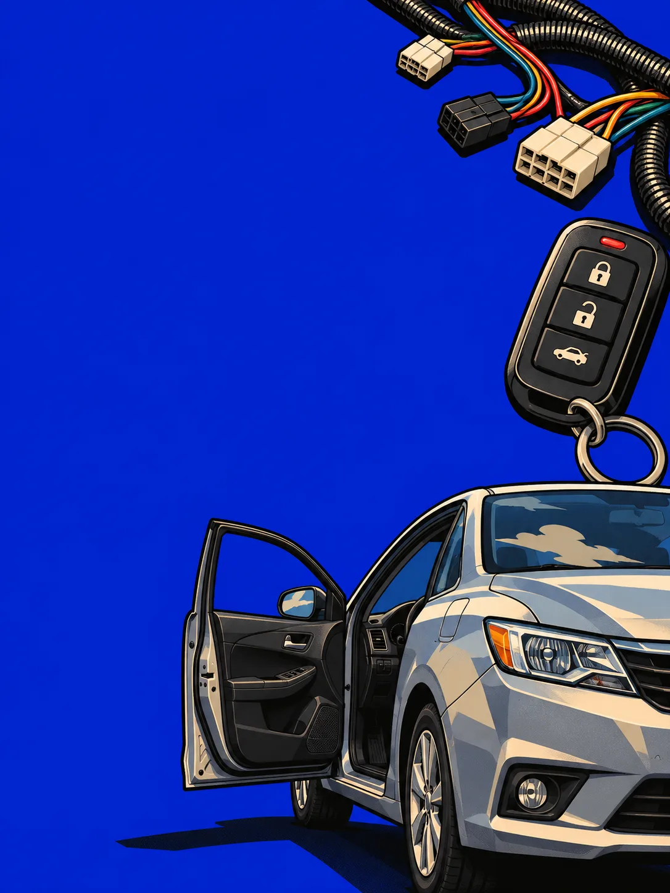
ТЗ для генератора
Vertical 3:4 illustration in the style of 2000s-2020s open-world video game loading-screen key art: thick black ink outlines, cel-shaded flat color blocks, hard-edged shadows, subtle halftone grit, semi-realistic painted forms, glossy poster finish. Background plate only, no people: a solid saturated deep blue background with dark flat silhouettes of a car with an open door, wiring harnesses, an alarm key fob, leaving the center-left two thirds empty for a cut-out photo of a person to be added later. Cars are clean, well-kept common mass-market models from 2015-2022 in good condition unless the scene says otherwise. No extra people beyond those described in the scene. No text, no letters, no numbers, no logos, no game titles, no brand badges on cars, no watermark, blank license plates, no weapons, no police, no characters from any existing game, no celebrities, no visible faces: people only from behind, in silhouette or as hands.
6. Артём – маэстро электроники
Если в машине что-то мигает, пищит или не работает – это к нему. Провода в гофре, а не на синей изоленте.
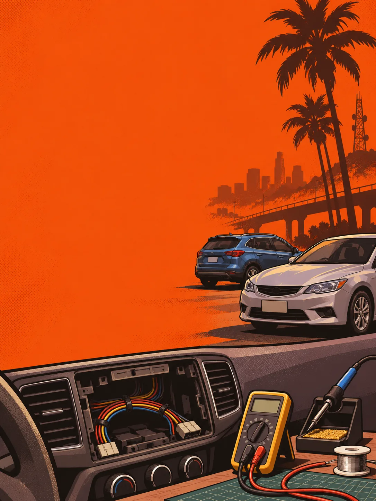
ТЗ для генератора
Vertical 3:4 illustration in the style of 2000s-2020s open-world video game loading-screen key art: thick black ink outlines, cel-shaded flat color blocks, hard-edged shadows, subtle halftone grit, semi-realistic painted forms, glossy poster finish. Background plate only, no people: a solid saturated burnt orange background with dark flat silhouettes of a dashboard with exposed neat wiring, a multimeter, a soldering iron, leaving the center-left two thirds empty for a cut-out photo of a person to be added later. Cars are clean, well-kept common mass-market models from 2015-2022 in good condition unless the scene says otherwise. No extra people beyond those described in the scene. No text, no letters, no numbers, no logos, no game titles, no brand badges on cars, no watermark, blank license plates, no weapons, no police, no characters from any existing game, no celebrities, no visible faces: people only from behind, in silhouette or as hands.
7. Максим – мастер ТО
Масло, фильтры, колодки – чтобы машина не встала в −30 по дороге на работу.
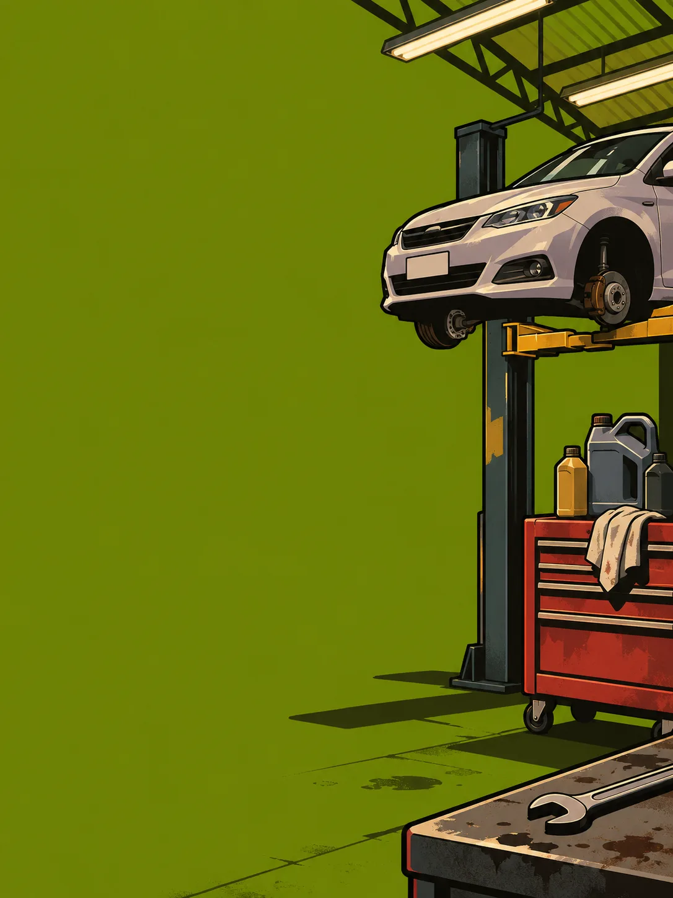
ТЗ для генератора
Vertical 3:4 illustration in the style of 2000s-2020s open-world video game loading-screen key art: thick black ink outlines, cel-shaded flat color blocks, hard-edged shadows, subtle halftone grit, semi-realistic painted forms, glossy poster finish. Background plate only, no people: a solid saturated olive green background with dark flat silhouettes of a car on a lift with wheels off, oil canisters, a wrench, leaving the center-left two thirds empty for a cut-out photo of a person to be added later. Cars are clean, well-kept common mass-market models from 2015-2022 in good condition unless the scene says otherwise. No extra people beyond those described in the scene. No text, no letters, no numbers, no logos, no game titles, no brand badges on cars, no watermark, blank license plates, no weapons, no police, no characters from any existing game, no celebrities, no visible faces: people only from behind, in silhouette or as hands.
8. Вся команда
Миссия: твоя машина. Ждём.
Картинка: реальное общее фото команды.
Файлы: ~/Sites/redakciya/temy/GTA6-OBLOZHKI-004/ – karuseli.py (тексты и ТЗ), risuy2.sh (рисование), stranitsa2.py (эта страница).